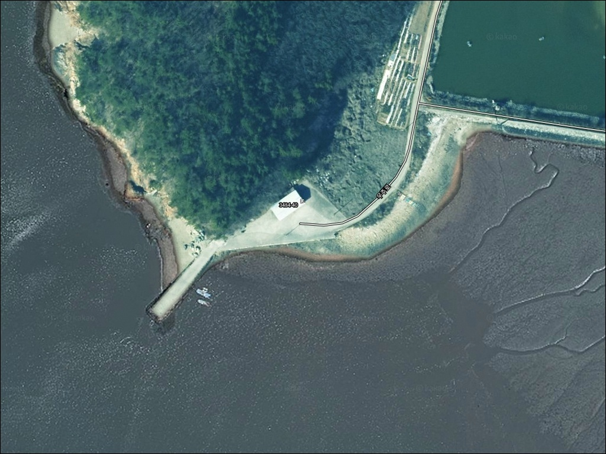
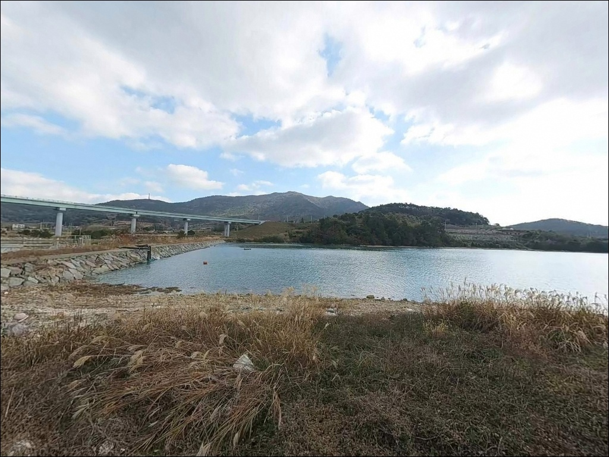
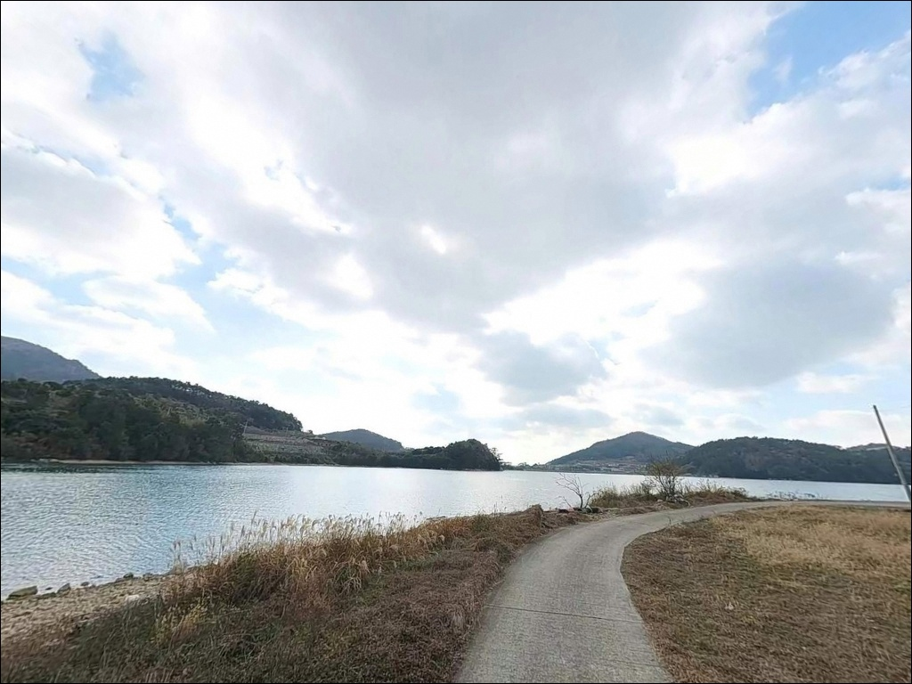
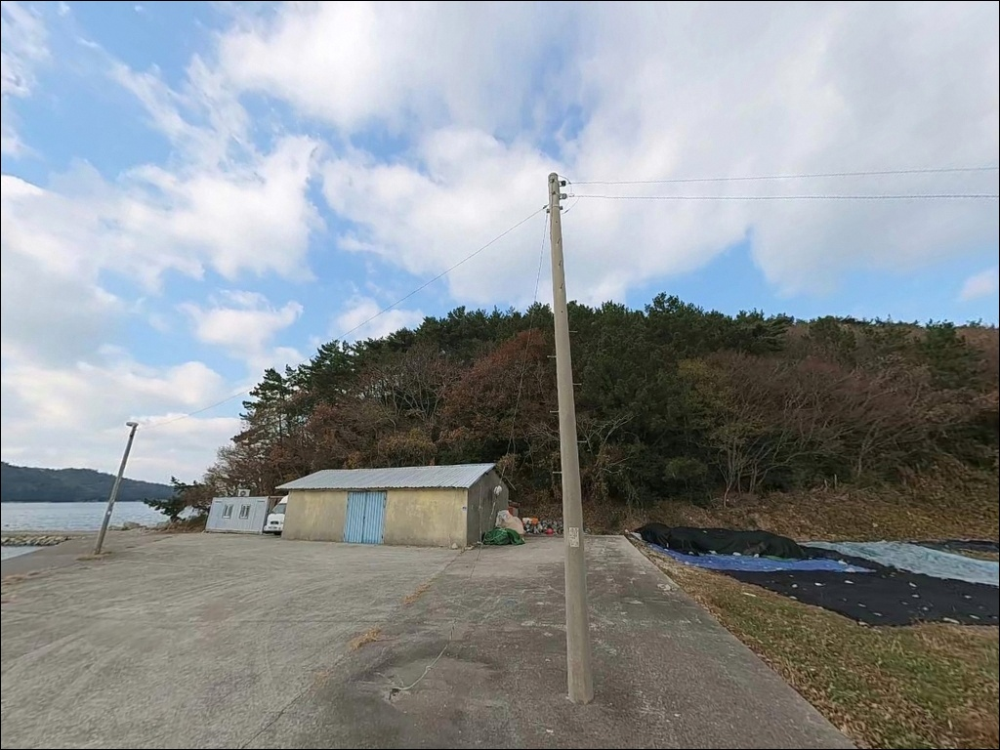
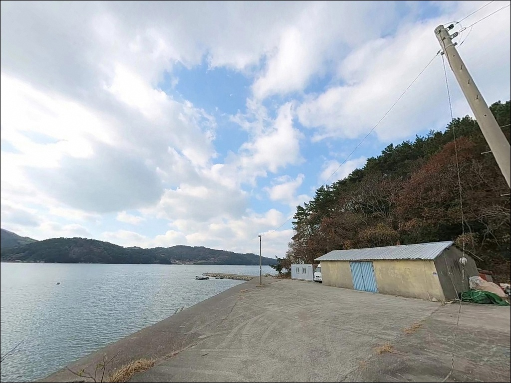
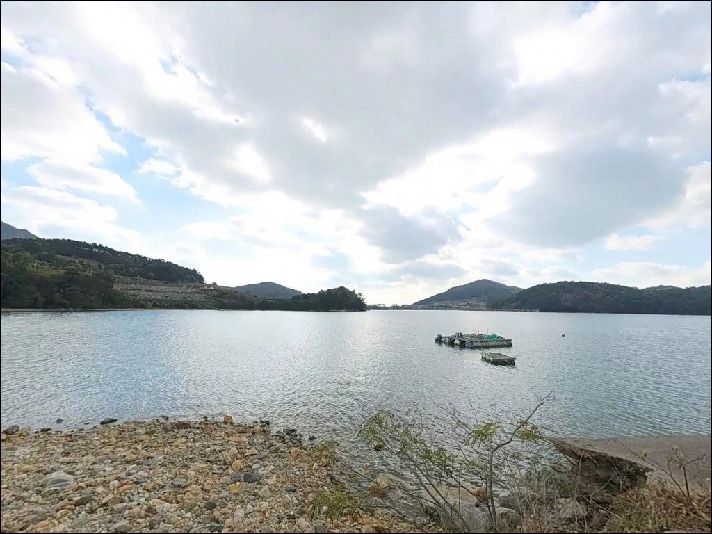
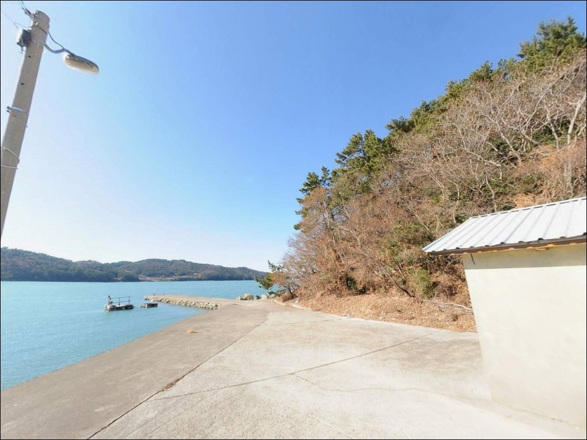
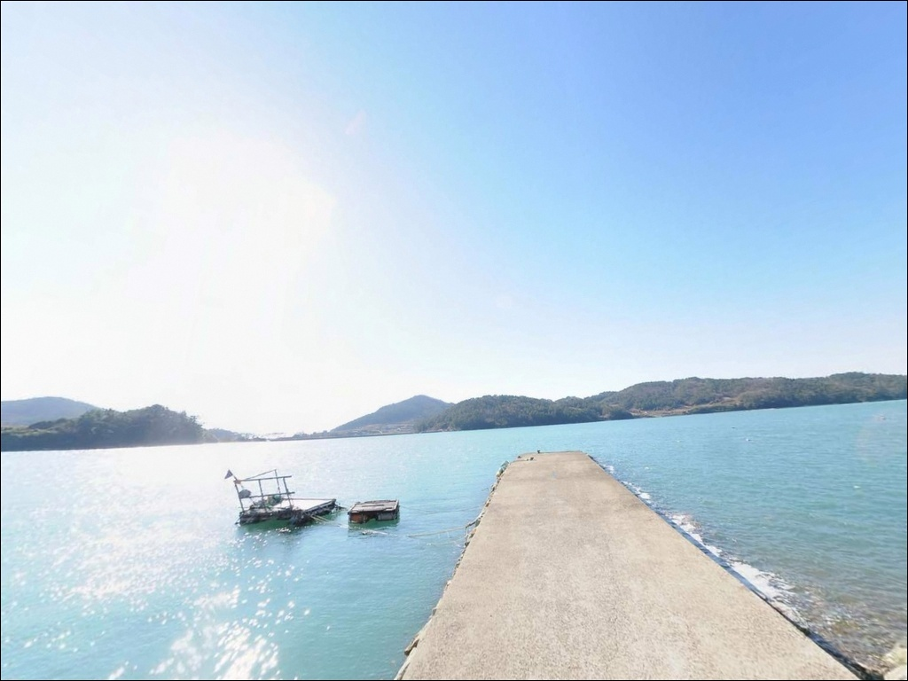
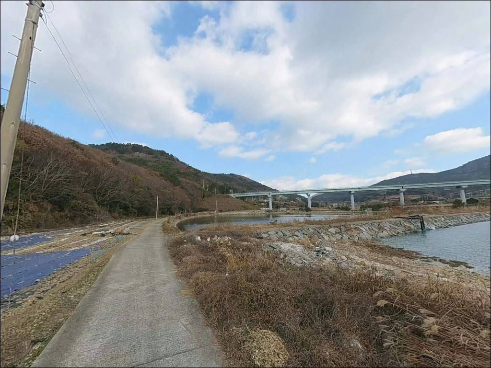

이 페이지에는 광고(제휴 링크 포함)가 있으며, 광고 링크를 통해 구매하면 운영자가 판매 수익 또는 수수료를 받을 수 있습니다. 포인트 사진: 카카오맵 스카이뷰·로드뷰. 이 페이지의 지도·사진 이미지는 카카오맵의 실제 서비스 이미지와 다를 수 있습니다.

외초리방파제
전남 고흥군 봉래면 외초리 870-12
외나로도 서쪽 염포 해역은
간조와 만조에 따라 수심 차이가 크게 벌어집니다.
물때를 확인하지 않고 도착하면
방파제 전면 수심이 얕아져
채비를 펼치기 어려운 상황이 만들어집니다.
만조 전후 1~2시간이 이 포인트의 핵심 조시이며,
출발 전 바다타임으로 봉래면 물때를
반드시 확인해야 합니다.
이 글은 외초리방파제의
진입 동선, 차박 여건, 물때 판단 기준,
낚시 방식별 공략 조건에 집중합니다.
조황 단정이나 특정 어종 보장은
이 글의 범위에 포함되지 않습니다.

외초리는 나로1대교와 나로2대교를 거쳐
차량으로 진입하는 섬 연륙 지역입니다.
나로2대교를 건너면 외나로도에 닿으며,
15번 국도에서 지방도로로 빠지면
외초리 방향 해안 도로와 연결됩니다.
외나로도 전역이 급커브와 경사가 반복되는
2차선 해안도로 구조이므로
야간 이동 시 서행이 기본입니다.
외초리 내부 진입로는 폭이 좁고
꺾이는 구간이 존재합니다.
승용차와 소형 캠핑카는 방파제 인근까지
접근과 회차가 가능한 편이지만,
대형 캠핑카나 카라반은
진입 전 도로 폭 확인을 먼저 해두어야 합니다.
주차는 방파제 상부 평탄면과
외항 초입 구간, 내항 선착장 인접 공터
세 곳을 활용하는 방식이 일반적입니다.
차량 2~3대 수용이 가능한 소형 규모이며,
어선 이동 동선과 어구 적재 공간을
침범하지 않는 자리를 먼저 잡아야 합니다.

외초리방파제 인근은 방파제 자체 차박보다는
낚시 대기 및 단기 휴식 수준의
체류가 현실적인 공간입니다.
주차 면적이 소형이고
어촌 마을 어업 활동과 겹치는 구조라
장기 차박 전용 베이스로는 공간이 제한적입니다.
방파제 외측은 외해 방향으로 열려 있어
야간 바람 영향이 강한 편입니다.
반경 1~3km 이내에는
차박·캠핑 환경이 갖춰진 대안이 있습니다.
외초리 333-1 일대의 나로힐링캠핑장은
바다 조망과 인근 낚시를 함께 즐길 수 있는
정식 캠핑장이며,
염포해수욕장에도 캠핑 데크와
편의시설이 갖춰진 해변형 캠핑지가
조성되어 있습니다.
외나로도 전역이 다도해해상국립공원 구역에
포함되어 있습니다.
국립공원 구역 내에서는
지정 장소 외 야영·취사가
원칙적으로 허용되지 않으므로,
방파제 인근 차박 계획이 있다면
관할 기관 확인을 먼저 진행해야 합니다.

외초리방파제 반경 1km 이내에는
염포해수욕장, 염포몽돌해수욕장,
염포항(중촌방파제) 등
해변과 소형 항구가 밀집해 있습니다.
한 구간 안에서 방파제·몽돌·갯바위·모래해변을
모두 활용할 수 있는
연안 낚시 벨트를 이루는 구조입니다.
편의점이나 식당은
반경 3km 이내에서 기대하기 어렵습니다.
나로도항 일대 식당가와 마트는
약 5~6km 거리에 위치하며,
봉래면사무소·나로도파출소 등
공공시설은 신금리에 집중되어 있어
외초리에서 약 3~5km 거리입니다.
식수·얼음·낚시 소품·연료는
출발 전 완비하고 진입하는 것이 기본입니다.
염포항(중촌방파제)은 1973년 지방어항으로
지정된 소규모 항구로,
방파제 화장실이 인근에 설치되어 있습니다.
응급 상황 발생 시 고흥군 봉래면 119지역대가
신금리에 있으며,
고흥읍까지의 거리를 감안해
비상약품 준비도 챙겨야 합니다.

외초리방파제 방문에서 가장 먼저 확인할 것은
물때입니다.
이 해역은 간조 시 전면 수심이 낮아져
채비 운용 자체가 어려워지는 구조입니다.
바다타임에서 봉래면 기준 물때를 확인하고
만조 전후 1~2시간을 중심으로
출발 시각을 맞추는 것이
이 포인트를 제대로 쓰는 방법입니다.
외나로도 전역이 기상 변화에 민감한 해역입니다.
외항 쪽이 남해 방향으로 열려 있어
북동풍·북서풍이 강한 날 파도 영향을 받습니다.
당일 아침 기상청 풍속 예보를 다시 한 번 확인하고,
너울이 있는 날은
방파제 끝단 접근 자체를 삼가야 합니다.
자갈·암반 지형 특성상 채비 손실이 있을 수 있어
여분 채비는 넉넉하게 준비하는 편이 좋습니다.
마을 선착장 구조이므로 어선 이동 동선과
어구에 접촉하지 않는 자리 선정이 기본 매너이며,
야간에는 구명조끼와 헤드랜턴을
반드시 갖춰야 합니다.
또한 출조 전 최신 조황은
봉래면 또는 외나로도 방면으로 검색해
반드시 확인하시기 바랍니다.

외초리방파제는 소형 만의 입구에 위치한 구조입니다.
방파제 내측은 파도 영향이 줄어드는 내항 성격이며,
외측은 열린 바다 방향으로
조류의 영향을 직접 받습니다.
방파제 발판이 평탄하고
테트라포드가 최소화되어 있어
원투와 찌낚시 진입이 수월한 편입니다.
저질은 자갈(몽돌)과 암반이 섞인 구조입니다.
이 지형은 볼락·노래미·감성돔처럼
암초를 의존하는 어종에게 유리한 환경이며,
방파제 끝단과 꺾임 지점에서
조류 흐름이 집중되는 구조입니다.
만조 기준 끝단 수심은 4~7m 내외로,
중하층을 노리는 채비가 어울리는
수심 구조입니다.
이 일대 해역은 봄~가을에
감성돔·볼락·노래미·붕장어·우럭·도다리·학꽁치·숭어가
기대 가능한 어종으로 형성되는 패턴입니다.
4~5월 갑오징어 산란기와 가을 에깅 시즌에는
갑오징어·문어도 이 해역에서 낚이는 것으로
알려져 있습니다.
최신 조황은 가기 전에 꼭
직접 검색해 보시기 바랍니다.

원투낚시가 이 방파제에서 가장 기본이 되는 방식입니다.
방파제 끝단에서 외항 방향으로 투척하면
수심 4~7m 구간을 자연스럽게 공략할 수 있습니다.
조류가 흐르는 물때에는
바닥층 탐색 범위가 넓어지고
도다리·붕장어·우럭 계열 입질을
기대해 볼 수 있는 지형 조건입니다.
찌낚시(릴찌낚시)는 방파제 내측과
꺾임 구간에서 중하층을 노리는 방식입니다.
내측 수면은 잔잔한 편이라
찌 컨트롤이 수월하고,
감성돔·볼락을 대상으로 한 찌낚시가
나로도 권역에서 널리 통용되는 방식입니다.
민장대 낚시도 가까운 수심대에서
무리 없이 운용할 수 있습니다.
루어낚시는 방파제 외측 암반 경계부가
핵심 탐색 구간입니다.
소프트베이트·지그헤드 계열로
볼락·우럭을 노리는 방식이
이 일대 해역에서 잘 통용됩니다.
에깅은 봄철 갑오징어 산란기와
가을 시즌에 외항 사선 캐스팅 구간이
주요 공략 자리입니다.

외초리방파제 여건이 여의치 않을 때
첫 번째로 이동할 대안은
중촌방파제(염포항)입니다.
외초리방파제에서 약 1~2km 거리로
같은 외초리 해역 연장선에 위치하며,
규모가 더 크고 수심 확보가 용이해
원투낚시객들이 즐겨 찾는 포인트입니다.
나로도항(신금항) 방파제는
약 5~6km 거리에 있는 외나로도 대표 항구입니다.
방파제 길이가 길고 주차와 진입이 안정적이며,
식당가와 인프라가 집중된 거점이기도 합니다.
외초리를 처음 탐색하러 간다면
나로도항을 기점으로 잡고
외초리방파제를 병행 탐색하는 동선이
효율적입니다.
외나로도 해역 안에서 바람이나 너울로
외초리 일대 전체가 어려운 상황이라면
내나로도·거금도 방향으로 이동해
다른 방파제나 선착장 포인트를
탐색하는 선택지도 있습니다.
나로2대교 다리 아래는 초행 낚시인에게도
진입이 수월한 편입니다.

원투낚시나 찌낚시를 즐기는 낚시인이라면
외초리방파제의 지형 조건은 잘 맞는 구조입니다.
발판이 평탄하고 테트라포드가 적어
진입이 수월하며,
방파제·몽돌·갯바위가 한 구간에 몰려 있어
여러 낚시 방식을 번갈아 시도하기 좋은
연안 벨트를 이루고 있습니다.
반면 물때를 확인하지 않고 도착하거나,
풍속이 센 날 외항 쪽에 자리를 잡으면
낚시 자체가 불가능한 상황이
만들어질 수 있습니다.
물때 확인, 기상 점검, 진입로 사전 확인,
이 세 가지를 갖추고 가는 것이
이 포인트를 제대로 쓰는 방법입니다.
차박은 방파제 자체보다
인근 나로힐링캠핑장이나
염포해수욕장 캠핑장 쪽이 더 현실적인 선택입니다.
다도해 연안 특유의 조용한 환경에서
낚시와 하룻밤 체류를 함께 엮고 싶은
낚시인이라면 방문해볼 만한 포인트입니다.